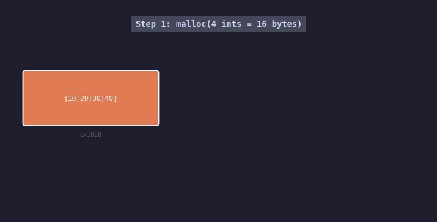
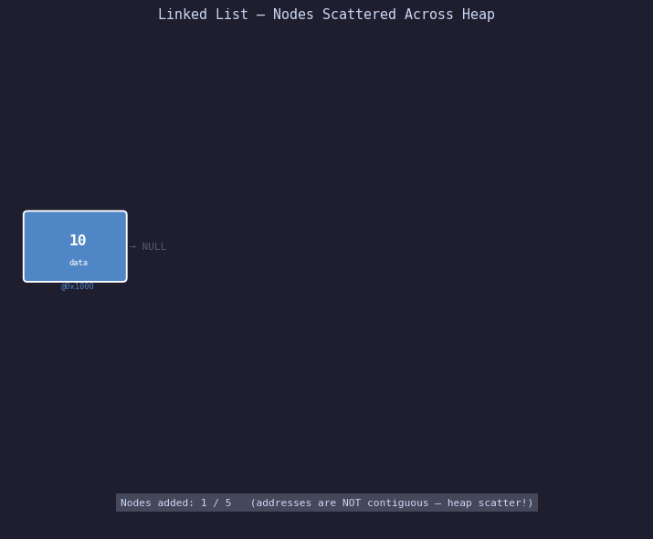
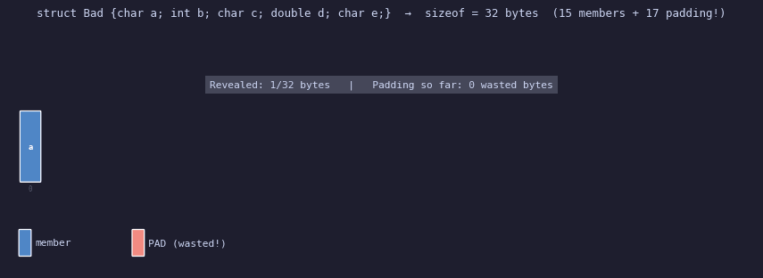

Part 1 built the vocabulary: stack vs heap, pointer arithmetic, the five memory segments, and why dynamic 2D arrays aren't what you picture. This part goes deeper into heap mechanics. We're going to look at three concepts that sit just below the surface — the kind of things that don't bite you in small programs but definitely bite you when you're writing a server, an inference pipeline, or anything that runs for more than a few seconds with real data.
In this post
Program 5 — realloc(): Resizing Heap Memory
Why realloc exists
malloc() gives you a fixed block. You specify the size upfront and
that's what you get. But real programs often don't know how much space they need
at the time of allocation — they start with a guess and grow. The naive approach
is: malloc a small block, fill it, malloc a bigger block, copy the data, free
the small block. realloc() does that for you in one call, and can
be smarter about it.
What realloc actually does under the hood
realloc(ptr, new_size) has three possible outcomes depending on the
state of the heap:
- Extend in place — If there is enough free memory immediately after the current block, the allocator just extends the block boundary. Same address. No copying. This is fast and is the common case when you grow a block shortly after allocating it before other allocations fill in the gap.
-
Move to a new location — If the space after the current block
is occupied, the allocator finds a new region big enough, copies all the old data
there using an internal
memcpy, and frees the old block. The returned pointer is different. Any pointer or reference you held to the old address is now dangling — this is a common source of bugs. -
Fail — If the heap has no block big enough,
reallocreturnsNULL. The original block is not freed. It still exists at the old address. This is the source of the classic realloc bug.

Step 1: initial malloc(4 ints = 16 bytes). Step 2: realloc to 8 ints — if space is available after the block, it extends in place and the address stays the same. Step 3: if not, the allocator finds a new location, copies old data, and frees the old block — the returned address is different. Step 4: shrinking trims the tail without moving.
#include <stdio.h>
#include <stdlib.h>
#include <string.h>
int main() {
// ── Initial allocation ────────────────────────────────────
int n = 4;
int *arr = (int *)malloc(n * sizeof(int));
if (!arr) return 1;
arr[0]=10; arr[1]=20; arr[2]=30; arr[3]=40;
printf("Initial: arr @ %p size=%d ints\n", (void*)arr, n);
// ── GROW: 4 → 8 ints ─────────────────────────────────────
// THE CLASSIC BUG:
// arr = realloc(arr, 8 * sizeof(int));
// If realloc returns NULL (out of memory), you've just
// overwritten arr (your only pointer to the old data)
// with NULL. The old data is leaked and irretrievable.
//
// SAFE PATTERN: use a temporary
int *tmp = (int *)realloc(arr, 8 * sizeof(int));
if (!tmp) {
// realloc failed — but arr is still valid!
fprintf(stderr, "realloc failed\n");
free(arr); // clean up the original
return 1;
}
arr = tmp; // only assign after confirming success
// Fill the new slots (old data preserved automatically)
arr[4]=50; arr[5]=60; arr[6]=70; arr[7]=80;
n = 8;
printf("After grow: arr @ %p size=%d ints\n", (void*)arr, n);
printf(" Old data preserved: arr[0]=%d arr[3]=%d\n",
arr[0], arr[3]); // still 10 and 40
// ── SHRINK: 8 → 3 ints ───────────────────────────────────
// Shrinking almost always happens in place — no move needed.
// Elements beyond the new size are simply inaccessible.
tmp = (int *)realloc(arr, 3 * sizeof(int));
if (tmp) { arr = tmp; n = 3; }
printf("After shrink: arr @ %p size=%d ints\n", (void*)arr, n);
printf(" arr[0]=%d arr[1]=%d arr[2]=%d\n",
arr[0], arr[1], arr[2]);
// arr[3]..arr[7] are gone — accessing them is UB
// ── Special cases ─────────────────────────────────────────
// realloc(NULL, size) == malloc(size)
// realloc(ptr, 0) == free(ptr) (implementation-defined, but common)
free(arr);
return 0;
}After grow: arr @ 0x5631d4a392b0 size=8 ints ← same addr (extended in place)
Old data preserved: arr[0]=10 arr[3]=40
After shrink: arr @ 0x5631d4a392b0 size=3 ints
arr[0]=10 arr[1]=20 arr[2]=30
When the address changes — and the subtle bug it creates
The move case is what causes the hard-to-find bugs. Suppose you have a struct with a pointer back into the array:
int *arr = malloc(4 * sizeof(int));
int *first_elem = &arr[0]; // save a pointer to the first element
arr = realloc(arr, 100 * sizeof(int)); // may move arr
// If realloc moved the array, first_elem is now DANGLING.
// It points to the old (freed) memory. Using it is UB.
printf("%d\n", *first_elem); // ← undefined behaviour if arr movedThe fix is to never save raw pointers into an array you might realloc. Save indices instead, and re-derive the pointer after the realloc:
int first_idx = 0; // save the index, not the pointer
arr = realloc(arr, 100 * sizeof(int));
int *first_elem = &arr[first_idx]; // re-derive after realloc — always validcudaRealloc. Device memory
cannot be resized in place. If you need a larger GPU buffer, you must:
cudaMalloc a new bigger buffer → cudaMemcpy old data into it → cudaFree the old
buffer. The same logical steps as a realloc-move, just written manually.
This is why pre-allocating a maximum-size buffer and tracking a "used" count
is a common GPU pattern — it avoids the copy entirely.
Program 6 — Linked List: Nodes Scattered Across the Heap
What a linked list actually is in memory
A linked list is a data structure where each element (node) explicitly stores
a pointer to the next element. There's no contiguous block. Each node is its own
malloc call, and can land anywhere on the heap. The only way to get from one node
to the next is to follow the next pointer — hence "pointer chasing."
Here's the node definition we'll use:
typedef struct Node {
int data; // 4 bytes — the payload
struct Node *next; // 8 bytes — pointer to the next node
} Node;
// sizeof(Node) = 16 bytes (4 data + 4 padding + 8 pointer)
Each node is 16 bytes. Each time we add an element to the list, we call
malloc(16). The OS can return any 16-byte-aligned address on the
heap. In a program that has other allocations happening, these addresses can
easily be kilobytes apart.

Each node appears at a different heap location. The arrows show the
next pointer chain — to traverse the list you must follow
each arrow (dereference each pointer), landing at a new, non-predictable
address each time. The CPU's prefetcher can't predict these jumps, so
every node access is potentially a cache miss.
#include <stdio.h>
#include <stdlib.h>
typedef struct Node {
int data;
struct Node *next;
} Node;
// Allocate and initialise a new node
Node *new_node(int value) {
Node *n = (Node *)malloc(sizeof(Node));
n->data = value; // n->field is shorthand for (*n).field
n->next = NULL;
return n;
}
// Append to the tail of the list
Node *append(Node *head, int value) {
Node *nn = new_node(value);
if (!head) return nn; // first node becomes the head
// Walk to the last node
Node *cur = head;
while (cur->next) cur = cur->next;
cur->next = nn;
return head;
}
// Insert at the head — O(1)
Node *prepend(Node *head, int value) {
Node *nn = new_node(value);
nn->next = head;
return nn; // new node is the new head
}
int main() {
Node *head = NULL;
// Build list: 10 -> 20 -> 30 -> 40 -> 50
for (int v = 10; v <= 50; v += 10)
head = append(head, v);
// Print the chain with addresses
printf("LINKED LIST — following the next pointer chain:\n\n");
Node *cur = head;
int idx = 0;
while (cur) {
printf(" node[%d] @ %p | data=%-3d | next→ %p\n",
idx, (void*)cur, cur->data, (void*)cur->next);
cur = cur->next;
idx++;
}
// Show byte gaps between consecutive nodes
printf("\nByte gaps between consecutive nodes:\n");
cur = head;
while (cur && cur->next) {
long gap = (long)cur->next - (long)cur;
printf(" %p → %p : %ld bytes\n",
(void*)cur, (void*)cur->next, gap);
cur = cur->next;
}
// Show sizeof
printf("\nsizeof(Node) = %zu bytes\n", sizeof(Node));
printf(" int data : %zu bytes\n", sizeof(int));
printf(" padding : %zu bytes (to align pointer to 8-byte boundary)\n",
sizeof(Node) - sizeof(int) - sizeof(Node*));
printf(" Node *next: %zu bytes\n", sizeof(Node*));
// Free — must visit every node; cannot bulk free
printf("\nFreeing nodes:\n");
cur = head;
idx = 0;
while (cur) {
Node *tmp = cur->next; // MUST save next BEFORE freeing cur
printf(" free node[%d] @ %p\n", idx, (void*)cur);
free(cur);
cur = tmp;
idx++;
}
return 0;
}The cache performance problem, explained
Modern CPUs work in units of cache lines — 64 bytes on x86. When you access any byte of memory, the CPU fetches the surrounding 64 bytes into L1 cache. If the next memory access is within those 64 bytes, it's a cache hit — essentially free. If not, it's a cache miss — the CPU stalls for ~100 nanoseconds waiting for the next cache line from RAM.
An array is cache-friendly. arr[0] through arr[15]
(for int) all fit in one 64-byte cache line. Scanning the array is nearly as
fast as the hardware can go.
A linked list is cache-hostile. Each node is a separate malloc. Node addresses
are unpredictable — they can be anywhere in the heap. When you follow
cur = cur->next, you're jumping to a random address that almost
certainly isn't in any cache. Every single node traversal is a cache miss.
addr[0]=0x1000, addr[1]=0x1004, addr[2]=0x1008... (same cache line)
Linked list traversal (5 nodes, scattered):
node[0]@ 0x2b0 → node[1]@ 0x4e0 → node[2]@ 0x1a30 → ... (cache miss each hop)
| Operation | Array | Linked List |
|---|---|---|
| Access by index [i] | O(1) — direct address calculation | O(n) — walk from head |
| Insert at front | O(n) — shift all elements | O(1) — new node points to old head |
| Insert in middle | O(n) shift + O(1) write | O(n) walk + O(1) pointer update |
| Sequential scan | Cache-friendly (prefetcher helps) | Cache-hostile (random pointer hops) |
| Memory overhead | Zero — just the data | +8 bytes per node for next pointer |
| Dynamic resize | Needs realloc (may copy) | O(1) new node, no copying |
Linked lists are essentially unusable on GPUs. A GPU's memory subsystem is designed for coalesced access — hundreds of threads reading consecutive addresses simultaneously. Pointer chasing gives you the exact opposite: each thread follows its own unpredictable pointer, producing hundreds of scattered, uncoalesced memory reads. The throughput collapses. GPU graph algorithms avoid linked lists by representing edges as sorted arrays with offset tables.
The arrow operator: what n->field actually does
When cur is a Node *, writing cur->data
is exactly the same as writing (*cur).data. The arrow operator
dereferences the pointer (follows the address to the actual struct in memory)
and then accesses the named field. These two are identical in machine code —
the arrow is just syntax sugar for the dereference-then-member pattern:
Node *n = new_node(42);
// These three lines do the same thing:
n->data = 100; // arrow: dereference then access
(*n).data = 100; // explicit dereference then member access
(&n->data)[0] = 100; // treat as pointer to int — also worksProgram 7 — Struct Padding & Memory Alignment
The problem: sizeof lies to you
Take this struct:
typedef struct {
char a; // 1 byte
int b; // 4 bytes
char c; // 1 byte
double d; // 8 bytes
char e; // 1 byte
} Bad;
// Sum of members: 1 + 4 + 1 + 8 + 1 = 15 bytes
// sizeof(Bad) = ???If you answered 15, run the program. The answer is 32 — more than twice the sum of the members. The extra 17 bytes are invisible padding inserted by the compiler. You didn't ask for them. You can't see them. But they're there, and they cost you memory and cache space on every single instance.
Why the CPU needs aligned memory
The root cause is hardware. A 64-bit CPU reads data from memory in aligned chunks.
To read an int (4 bytes), the CPU requires the starting address to
be a multiple of 4. To read a double (8 bytes), it requires the
address to be a multiple of 8. This isn't a language rule — it's a CPU hardware
constraint.
What happens if data is misaligned? On x86, the CPU can still read it — but it takes two memory operations instead of one, with the two halves fetched separately and assembled. On ARM, misaligned access typically causes a hardware exception (bus error / alignment fault) that kills the process.
So the compiler, knowing this, inserts invisible padding bytes between struct members to ensure each member starts at its required alignment boundary.

The 32 bytes of struct Bad revealed byte by byte. Blue slots are
actual member data. Red slots are padding — wasted. The struct has only 15 bytes
of real data but occupies 32 bytes because the poor member ordering forces the
compiler to insert 17 padding bytes to keep each member aligned.
#include <stdio.h>
#include <stddef.h> // offsetof()
// ── BAD ordering (mixing large and small types) ───────────────
typedef struct {
char a; // offset 0, size 1
// [3 bytes PADDING] → to align b to offset 4 (multiple of 4)
int b; // offset 4, size 4
char c; // offset 8, size 1
// [7 bytes PADDING] → to align d to offset 16 (multiple of 8)
double d; // offset 16, size 8
char e; // offset 24, size 1
// [7 bytes TAIL PADDING] → struct size must be multiple of 8
// (the largest member) so arrays stay aligned
} Bad; // sizeof = 32
// ── GOOD ordering (largest to smallest) ──────────────────────
typedef struct {
double d; // offset 0, size 8 — 8-byte aligned at 0 ✓
int b; // offset 8, size 4 — 4-byte aligned at 8 ✓
char a; // offset 12, size 1 — always aligned ✓
char c; // offset 13, size 1 — always aligned ✓
char e; // offset 14, size 1 — always aligned ✓
// [1 byte tail padding] to align struct to 8
} Good; // sizeof = 16
// ── PACKED (no padding at all) ────────────────────────────────
typedef struct {
char a;
int b;
char c;
double d;
char e;
} __attribute__((packed)) Packed; // sizeof = 15 exactly
int main() {
printf("sizeof(Bad) = %zu bytes (members sum to 15, wastes %zu)\n",
sizeof(Bad), sizeof(Bad) - 15);
printf("sizeof(Good) = %zu bytes (same data, almost no waste)\n",
sizeof(Good));
printf("sizeof(Packed) = %zu bytes (no padding — but misaligned!)\n",
sizeof(Packed));
// Print every member's offset in Bad
printf("\nBad struct layout:\n");
printf(" offset of a = %2zu (1 byte, then 3 padding)\n", offsetof(Bad, a));
printf(" offset of b = %2zu (4 bytes)\n", offsetof(Bad, b));
printf(" offset of c = %2zu (1 byte, then 7 padding)\n", offsetof(Bad, c));
printf(" offset of d = %2zu (8 bytes)\n", offsetof(Bad, d));
printf(" offset of e = %2zu (1 byte, then 7 tail pad)\n", offsetof(Bad, e));
printf("\nGood struct layout:\n");
printf(" offset of d = %2zu (8 bytes, no padding needed)\n", offsetof(Good, d));
printf(" offset of b = %2zu (4 bytes, no padding needed)\n", offsetof(Good, b));
printf(" offset of a = %2zu (1 byte)\n", offsetof(Good, a));
printf(" offset of c = %2zu (1 byte)\n", offsetof(Good, c));
printf(" offset of e = %2zu (1 byte, then 1 tail pad)\n", offsetof(Good, e));
// Demonstrate with an array — padding cost multiplies
int n = 1000000;
printf("\nIn an array of %d elements:\n", n);
printf(" Bad uses %zu MB\n", (sizeof(Bad) * n) / (1024*1024));
printf(" Good uses %zu MB\n", (sizeof(Good) * n) / (1024*1024));
printf(" Saving %zu MB just from reordering members!\n",
((sizeof(Bad) - sizeof(Good)) * n) / (1024*1024));
return 0;
}sizeof(Good) = 16 bytes (same data, almost no waste)
sizeof(Packed) = 15 bytes (no padding — but misaligned!)
Bad struct layout:
offset of a = 0 (1 byte, then 3 padding)
offset of b = 4 (4 bytes)
offset of c = 8 (1 byte, then 7 padding)
offset of d = 16 (8 bytes)
offset of e = 24 (1 byte, then 7 tail pad)
In an array of 1000000 elements:
Bad uses 30 MB
Good uses 15 MB
Saving 15 MB just from reordering members!
How to read struct layout in your head
Walk through the members in declaration order. For each member:
- Note its alignment requirement:
char→1,short→2,int→4,double→8 - Round the current offset UP to the next multiple of that alignment
- Place the member there; advance the offset by the member's size
- After all members, round the total size up to the largest member's alignment (for array compatibility)
Let's trace Bad manually:
offset 0: char a (align=1, ok at 0) → next offset = 1
offset 1: need int b (align=4)
round up 1 to next multiple of 4 = 4
→ 3 bytes of padding at offsets 1,2,3
offset 4: int b (4 bytes) → next offset = 8
offset 8: char c (align=1, ok at 8) → next offset = 9
offset 9: need double d (align=8)
round up 9 to next multiple of 8 = 16
→ 7 bytes of padding at offsets 9–15
offset 16: double d (8 bytes) → next offset = 24
offset 24: char e (align=1, ok at 24) → next offset = 25
struct size must be multiple of 8 (largest member)
round up 25 to 32
→ 7 bytes of tail padding at offsets 25–31
Total: 32 bytesThe packed struct: when to use it and when not to
__attribute__((packed)) (GCC/Clang) or #pragma pack(1)
(MSVC) tells the compiler: don't insert any padding. The struct will be exactly
the sum of its member sizes.
When to use it:
- Network packet headers where exact byte layout is mandated by a protocol (Ethernet, IP, TCP)
- Binary file formats where you're reading/writing raw structs to disk
- Communication with external hardware that expects a specific byte layout
When NOT to use it:
- General application data — you'll pay 30–50% performance overhead from misaligned accesses on x86
- Any code that runs on ARM — misaligned access causes a hardware exception on most ARM cores
- Data passed to the GPU — CUDA requires aligned memory for coalesced access
float4, int2, etc.) which are always
aligned. For custom structs, apply the same largest-first ordering rule — and
check with __alignof() to verify. A poorly-aligned struct in a
GPU kernel that processes millions of elements per second can cost you significant
memory bandwidth.
Using offsetof() in practice
The offsetof(type, member) macro (from <stddef.h>)
returns the byte offset of a member within its struct. It's the canonical way
to inspect struct layout without guessing:
#include <stddef.h>
// Check if your struct is laid out how you think
static_assert(offsetof(Good, d) == 0, "d must be at offset 0");
static_assert(offsetof(Good, b) == 8, "b must be at offset 8");
static_assert(sizeof(Good) == 16, "Good must be 16 bytes");
// These fire a compile-time error if the layout doesn't match expectations
Use static_assert liberally in structs that cross API boundaries,
get serialised to disk, or get sent over a network. The compiler will tell you
immediately if a platform change (different compiler, different ABI, different
architecture) broke your assumptions.